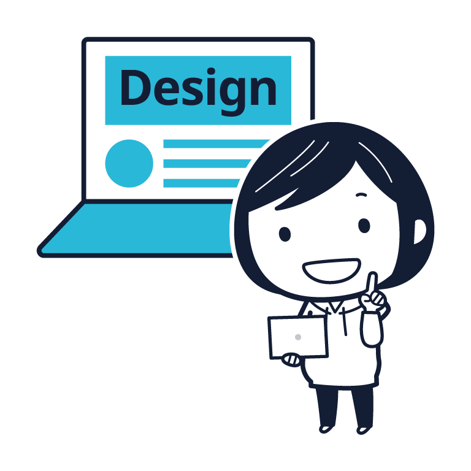
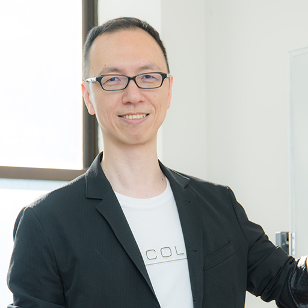
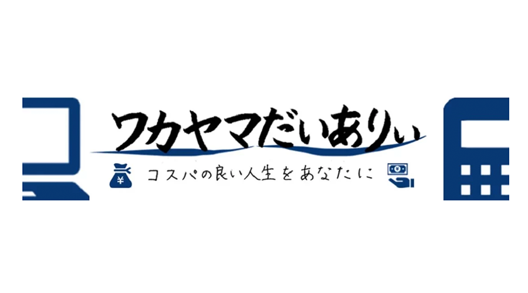
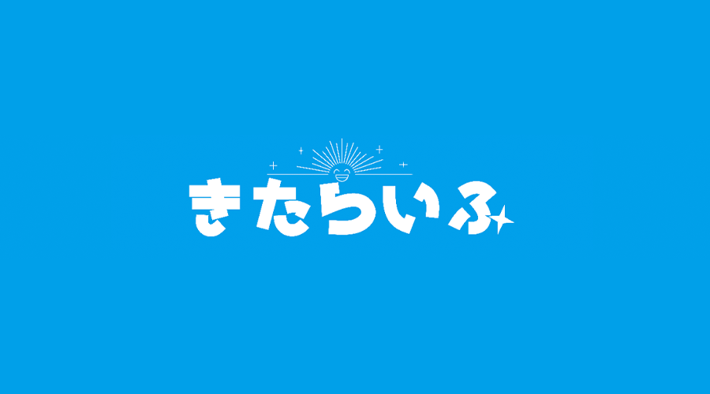

現場主義
「プログラム」だけでは稼げない！ 現場で求められる「技術」のみ教えます。
現役講師
「今、求められている技術」をリアルタイムに教えてくれる、現役の技術者だけが講師です。
徹底サポート
期間中の質疑応答無制限！ 個別進捗管理！ 挫折させないサポートを徹底します。
新着情報
-
2020年12月22日
-
2020年12月9日
-
2020年10月25日
RaiseTechの4つの特長
プログラミングだけじゃ通用しないから。
現場主義にこだわります。
RaiseTechはプログラミング「だけ」を教えるスクールではありません。
プログラムの腕だけでは稼げるエンジニアにはなれないのです。
わたしたちは、他に体得すべき様々な技術を教え、あなたが稼げるエンジニアになることを全力でサポートします。

現役エンジニアのみがあなたの講師。
優秀な技術者がメンターになります。
RaiseTechでは徹底して、現役エンジニアのみが講師となります。
現場主義にとことんこだわるため、現場で今、求められている技術のみを教えます。
使われない技術を学んでも、市場が求めていない技術を学んでも、稼げるようにはならないからです。

挫折させないサポート。
プログラム未経験者でも全力でサポートします。
RaiseTechでは受講期間中の質疑応答は無制限で、現役エンジニアに直接質問が出来ます。更に個々人それぞれの進捗管理、状況の把握を徹底し、講師側・運営側から挫折しないようサポートします。個人の状況に応じた補講やマンツーマンでのビデオ通話なども行い、学習ペースを合わせます。
自社開発を行うシステム会社が運営に携わっています。
中国向けECサイトを自社開発し、大手企業との直接請負による案件受注も行うシステム会社が運営に携わっています。 複数のパートナー会社と連携して、案件の紹介、一部自社案件の発注も行います。 自社開発、自社からの直接紹介、直接発注も行うからこそわかる面談時の注意点や、採用のポイントも伝えます。

学習コース
-
Javaフルコース2週間トライアルOKフルコース
昔から使われている言語であるJavaを、現場で通用するレベルまで学習するコースです。Javaは案件数が豊富で、業務系の案件が多く、大手企業でも採用が多い言語です。Javaを使い、Webアプリケーションを作成し、周辺技術を活用した現場で使える技術が学べます。
こんなあなたにオススメ
- プログラム初心者、業界未経験だけど、エンジニアになりたい
- 基礎から応用まで現場で通用する技術を一通り学びたい
- とにかくエンジニアになって稼ぎたい

-
AWSフルコース2週間トライアルOKフルコース
今話題のクラウドサービスでシェアがトップであるAWSを、現場で通用するレベルまで学習するコースです。クラウド化の流れにより、インフラ構築やクラウド移行の案件が増加している中、AWSは採用実績が豊富にあります。AWS上でのインフラ環境構築、インフラのコード化、自動化、DevOpsといった現場の技術を学べます。
こんなあなたにオススメ
- 業界未経験だけど、エンジニアになりたい
- 基礎から応用まで現場で通用する技術を一通り学びたい
- とにかくエンジニアになって稼ぎたい
- 今流行りのクラウド技術を学びたい

-
WordPress副業コース2週間トライアルOKフルコース
WordPressと呼ばれるCMSを使って、Webサイトのコンテンツ管理を支援する技術を学ぶコースです。サーバーの基礎から、PHPを使ったプログラミングの基礎、HTMLやCSS、JSを使ったWebサイトのコンテンツ制作について学び、最終的にはWordPressによるWebサイトの制作が出来るところまでが学べます。在宅や副業として出来るレベルに特化した学習要項となっており、それが出来るまでをサポートします。
こんなあなたにオススメ
- 副業で、技術を使って稼いでみたい
- 在宅で仕事が出来るようになりたい
- 基礎から応用まで現場で通用する技術を一通り学びたい
- 現役エンジニアのメンターが欲しい
- 1人で学ぶのが苦手だから、学習をサポートして欲しい

-
デザインコース2週間トライアルOKフルコース
様々な情報が行き交う現代において必要不可欠な技術がデザインです。そしてデザインには種類があり、Webで利用されるものとオフラインで利用されるものがあります。その双方の特徴を押さえつつ、利用者、提供者にとって最も適切なデザインを提供する。そして多くの人に文字だけでは伝えられない情報・価値を提供します。このデザインコースではその為に必要な知識、技術、ツールの使い方、考え方を学び、実際に実践できるまでをサポートします。また案件獲得、仕事をする為に必要なSNSの活用方法やポートフォリオについてもサポートします。
こんなあなたにオススメ
- 副業で、技術を使って稼いでみたい
- 在宅で仕事が出来るようになりたい
- 基礎から応用まで現場で通用する技術を一通り学びたい
- 現役デザイナーのメンターが欲しい
- 1人で学ぶのが苦手だから、学習をサポートして欲しい



トライアル受講で
違いを実感してください
各フルコースでは2週間の体験期間を設けています。この期間内であれば全額返金保証致します。
最速で稼ぐ、現場の技術とその理由。現役エンジニアの実体験、実例。徹底したサポート。
これらのサービスの質は他を探しても存在しない自負があります。実際に体験して、違いを実感してください。
他スクールと比べてみると
| RaiseTech | スクールA | スクールB | |
|---|---|---|---|
| 料金 | ¥248,000 ～ ¥398,000 (税込) |
¥690,800 (税込) |
¥657,800 ～ ¥877,800 (税込) |
| カリキュラム | 詳細まで全公開 |
一部公開 |
非公開 |
| 習得技術 | 今、現場で使われている技術 |
初級～中級レベルの技術 |
中級レベルの技術 |
| クラウドサービス | 専用の技術習得講座有り |
教材内で部分使用 |
教材内で部分使用 |
| 授業形態 | オンライン講座形式 | オンライン教材及び会場 | オンライン教材及び会場 |
| 講師 | 現役で稼いでいるエンジニアのみ |
専属講師なし |
専属講師なし |
| 受講期間 | 2カ月 ~ 4カ月 | 3ヶ月 | 6カ月 |
| オンラインサポート | チャットサポート マンツーマンサポート メンター 補講 |
チャットサポート メンター |
チャットサポート メンター |
| 質問制限 | 無制限 |
無制限 |
無制限 |
| 年齢制限 | なし | 制限有り | なし |
| 就職・転職支援 | 自社案件紹介、他社利用含め、有り |
有り(30歳以上は要相談) |
有り |
| 無料体験 | 2週間のトライアル受講(無料期間)有り※フルコースのみ | 1週間の無料体験有り |
14日間の返金保証有り |
講師紹介
講師は全員月単価80万以上の現役エンジニア
RaiseTechの講師は全員本業はエンジニアです。現場で実際に使える技術や知識を授業に取り入れています。
講義内容だけでなく、仕事や技術、エンジニアの実情なども気軽にご質問ください！
-
エナミコウジ
(Java・AWSエンジニア / RaiseTech運営者兼講師)
RaiseTech運営者兼講師。
徹底した現場主義で現場のリアルな情報をお話しします。- 自己紹介文
-
JavaとAWSを主戦場として働いている常駐型の現役エンジニア。最高月単価は160万。
でもPM(プロジェクトマネージャー)業なので、プログラマーとしては80～100万あたり。
元フリーランス・フルリモートのエンジニア。しかし、個人開発に限界を感じてチーム開発のしやすい常駐型をあえて選択。常駐が好き。教育という分野に関心があり、それを半永久的に実現する為の仕組みとして「RaiseTech」を運営。
現場が求めている技術を現場の人が教えられるような仕組みを構築。
仕事大好き(むしろ趣味)の「ワーク・エンゲージメント」です。 - 性格
-
圧倒的な「陽キャラ」です。1人で8時間ぶっ通しで喋っても問題ないぐらい、喋れます。
チームメンバーから「いるといないとでは雰囲気が違う」と言われるぐらい、場を明るくするのが得意です。でもウルサイです。
人に対して怒る事はありません。責めることもしませんし、見捨てることもしません。
ただあるがままにその状態を観察・分析して、そこから「どう改善するか」に焦点を置きつつ「出来た事を評価」します。
一見すれば「優しい」ですが「甘い」わけではないので、そこで教育者としてバランスを取って、教育しています。
-
ウシジマユウタ
(Rails&DevOpsエンジニア)
躓きやすいポイントを解説しつつ、ググり方ベースからお伝えしています。
- 自己紹介文
-
フルリモートで働いており、エンジニアとしての月単価はフル稼働換算で80万円ほど。
また、複業としてRaiseTech以外にもメンターを掛け持ちしたり、新規案件をIaaSをで単独実装したりしてます。
レスポンスの速さは「はぐれメタル級」と評判。
現場での失敗や経験から学んだことをわかりやすく伝えていきます。 - 性格
-
某サッカー少年よろしく、エラーは友達だと思っている派。
遭遇するとテンションが上がり、ひとりごとが多くなる変人。
これまで倒してきたエラーは数知れず。
躓きやすいポイントを解説しつつ、ググり方ベースからお伝えしています。
-
中西 悠人
(Rails / インフラエンジニア)
経験をもとに、事実ベースの話を添えて解説していきます。
- 自己紹介文
-
客先常駐＋リモートワークで働いており、月の総収入は100万超。
PCが唯一触っている時にワクワクするという理由だけで、インフラ運用保守としてIT業界に飛び込みましたが、会社員→フリーランスと歩んできた中で自分のエンジニア像と乖離があることに気付き、独学でプログラミングを習得し開発側に転向。
人の技術を盗むことと、情報を聞き出す事が得意でエンジニアにとって最重要なことはコミュニケーション能力だと考えています。 - 性格
-
困っている人を見つけると「自分が助けなくては」と考える主人公思考。
誰もわからない仕事を任されるとやる気が出るタイプ。
気になったことは考える前にとりあえず行動に移してしまう野心家。
基本的に身につけたスキルは独学＋現場で培ってきましたが、様々な問題に躓いてきたため初学者の目線に立って回答することを心がけています。
-
戸部拓人
(サーバーサイド・フロントエンジニア / RaiseTech講師 / メンター)
現場で”今”求められているスキルと実力が身につくようにサポートします！
- 自己紹介文
-
都内の常駐先で働いており、月単価80万円程度。
サーバーサイドJavaが得意で、現在はフロントエンド（React.jsやTypeScriptなど）に力を入れている。
最近のお仕事ではコードレビューと設計の刷新が好きです。
月に数回作業会を開催しており、Webエンジニアを目指すためのメンター業も行っている。
“現場で活躍できる実力を備えたエンジニア”をできるだけ多く排出していくためにも、講師としての腕を日々磨いていこうと思います！
モットーは「好きな人と好きなことを好きなだけやる」。 - 性格
-
人と話すのが好きで、ノリとテンションと機転を利かせた言い回しが特徴。”エンジニアっぽくないエンジニア”代表を務めており、初対面ではだいたい営業に間違えられる。
割とズバズバ言うので、あまり真に受けないで参考に留めるのが吉。チームビルディングが好きで雰囲気が良くなるように立ち回る。たまに開発メンバーとランチに行っては技術の話をしている。
いつも皆と遊びたいと思ってるので、「一緒にスマブラしましょう！」「つけ麺でも食べに行きましょう！」と誘われると何でも教えちゃうかもしれない。常に動いていないと暇すぎて死んでしまうらしい。
-
 ぱく ひょぬ
(ITアーキテクト / ITベンチャー企業 代表取締役)
技術はもちろんのこと、フリーランス・起業・人脈づくりなどIT業界を生き抜く方法をお伝えします。
- 自己紹介文
-
Javaを主とした技術者として極小～特大規模の様々なプロジェクトに参加してきました。
プロジェクト全体的に影響する「標準設計」・「運用ルール策定」などの役割で、他の技術者を技術面でサポートする機会を多く頂きました。
会社員・フリーランスを経験し、現在はIT企業の経営者として日々楽しく仕事をしています。
大企業のJava研修の講師や小学生向けプログラミング教室の先生もやっており教育にも力を入れています。 - 性格
-
前向きな性格でほとんどのことをいい方向に捉えて前に進みます。
また、明るくて優しいとよく言われますね。
仕事場でも質問しやすい雰囲気をまき散らしているので、初心者から上級者までみなさんが相談に来てくれます。
そのおかげで能力のないときから頼られまくって今の技術力が身に着いたと思います。
「やれない」人には優しく、「やりたくない」人には厳しく、を軸に接しています。
-
YAT
(Webデザイナー / Webエンジニア)
Web制作に関することすべてを一貫して行なう。
チームとして担当を割り振って制作する。
どちらにも対応して現場で働いているので、業界でどのスキルをどう伸ばせば業界でやっていけるかを含めてお伝えいたします。- 自己紹介文
-
デザイン・コーディング・エンジニアリング（フロントエンド・バックエンド）・カメラ・ビジュアルづくり・動画作成及び編集・コンテンツ作り・ライティング・マーケティングなど、多岐にわたるWebサイト制作において必要なスキルはすべて活かしつつ現場で働いています。
WordPressでの開発が多く、WordPress.orgに自身が開発したテーマやプラグインを公開したり、ブログでテーマの開発フローを記事に書いたりと、アウトプットも頻繁に行っています。 - 性格
-
面倒見がよく、他の人にアドバイスしたり物事を教えることが好きで、その人が理解して成長がみえるととても嬉しいです。
Webのサイト制作者向けのブログを10年運用していて、文字で何かを伝えたり、登壇して言葉で何かを伝える事が好き。
自分の考えをとにかくアウトプットして伝えるのが日課です。
-
角田綾佳
(デザイナー／イラストレーター)
デザインを頭に描く、頭に描いたデザインを形にする、その方法を学びましょう。「これをデザインしたい」「こんなデザイナーになりたい」というゴールに向かって、ぜひ一緒にがんばりましょう。
- 自己紹介文
-
ウェブデザインから始まり、グラフィックデザイン、ロゴデザイン、キャラクターやイラストなどデザインに関わるさまざまな制作を担当しています。デザインについて考えること、ツールを学ぶこと、どちらも大好きです。これまで派遣社員、社員、フリーランスでデザイナーを経験しており、その経験を生かし、これからのデザイナーの働き方についてもお伝えしたいと考えています。
- 性格
-
デザイン大好き、負けず嫌い、仕組みや理由を考えることが好き。好きなもので人と繋がりたいので、デザインの話を聞く・するのが大好き。納得しないと理解ができないタイプで、そのかわりじぶんが理解できたことを人に伝えたいという欲求が強い。
動画一覧
受講生の口コミ一覧
RaiseTech入って、自走力の大切さを改めて考えさせられている。
— ましゃ (@masyamasya33) June 7, 2020
インプットだけじゃ、実際にサイト作成してみるとあまりわかってないことに気付かされるし、
コーディングしてみて、自分がイメージどおりになってるか確かめることで理解が深まる。 #RaiseTech
今日はサイトの打ち合わせしてました！デザイン見せただけでも喜んでくれた😊
— かいと@プログラミング初学者 (@6YchUvjiV8pFpKa) June 9, 2020
さらに友達にロゴ作ってもらえることに！物作りがだんだん広がってく感じが楽しい。
だが、Gulpは動かない….#RaiseTech#webデザイナーと繋がりたい#駆け出しエンジニアと繋がりたい
本当に思うのだが #Raisetech のメンターさんは
— @shinウェブデザイナー×美容師 (@shin0318) May 26, 2020
すごいと思う。
どんなにもの分りが悪くても
自分で調べろだけで突き放したりせず
ヒントをくれたり的確な指示をもらえて、
でもただ答えを出すことはしない
画面共有してるわけでもないのに横にいるかの如く
↓続くよ
今日は #RaiseTech でオンライン女子会がありましたよ。
— みーま@☁エンジニアLv.X🥺 (@miima_17) May 24, 2020
同じ属性の人が集まってお話するのって、
互いの理解も深まるし、連帯感も生まれるんですよ。
受講生同士繋がれるのも良い。
なので女子会ってのがポイント。
こういう自主性を応援できる環境を提供できる場でありたいっすね。
ご報告🎉
— Takao@駆け出しエンジニア (@formaggiooo) April 4, 2020
コロナで大変な時ですが、4月からAWSメインのCIer企業に転職することが出来ました。
転職まで学習を継続できたのは #TakeoffRails と #RaiseTech のおかげです。@mc_chinjuさん、 @koujienamiさん、 @web_ushizimaさんありがとうございました。#駆け出しエンジニアとつながりたい #転職
本気の転職宣言をしてから気づいたら3か月以上経ってた、
— ヒトシ@筋トレパパエンジニア (@hitoshi_kinPapa) December 29, 2019
その間、本気で転職活動をした結果、
自社開発の企業様から内定を頂け、
来年からエンジニアとして働くこととなりました！
ここまで来られたのも
自分の頑張りももちろんですが、#RaiseTech という支えがあったおかげです。
先週くらいから面接受け始めて面接は3社くらい受けてるけど全部通過している！！
— はやっさん (@hayassan8) November 13, 2019
学んできたこと説明するだけで印象いいのでRaiseTechのすごさ実感しておる、、。
先ほどまで @koujienami さんによる第1回目の講座を受けて来ましたが、とても良かったですよ❗️
AWS特有の単語についてとても丁寧に解説をしてくださり、今回のコースを終えた時の全体像についてイメージする事が出来ました😋
これからがとても楽しみです✨ https://t.co/1o2sWAnTmv— ゆーや / プログラミング コーチ (@yu_nocode) November 5, 2019
RaiseTech⑦Javaコース
すごくモチベ―ションが上がる講義。
springアプリをawsでデプロイしたい！
RaiseTech⑦Awsコース
とにかくすごかった。。
だいぶ詰め込んだので今週は復習する。— Tokuty (@Tokutobyland) October 19, 2019
卒業生等のブログ一覧
実際にRaiseTechを受講した卒業生の声、インタビューいただいた声を掲載しております。
-
RYUKEN OFFICIAL BLOG
大阪で確実にエンジニア就職するなら”RaiseTech”でJavaをやれ
-

ワカヤマだいありぃ
RaiseTech受講後1か月！実際に現場で通用しているのか？
-

きたらいふ
【体験談】RaiseTech(レイズテック)で月収55万円のAWSエンジニアへ
卒業生の声
-

受講後もオンラインのコミュニティにとどまり続けることができる
（50-100名規模のIT企業勤務｜野田雄大 さん）
受講期間終了後も質問・相談などを受け付けてくださるので現場に出た今でもコミュニティの存在は安心感を生んでいます。 コミュニティは非常に活発で勉強会などの頻繁に開催されているので、そういった機会を得られるのはとてもありがたいと感じています。
続きを読む
-
質問対応などのサポートが充実していて、最後まで講座を進められた。
（大学生｜髙嶌 海登 さん）
講座内容としてはやはり「現場主義」なだけあって特に初学者にとっては難しいものだと感じました。さらに「自走力」を習得することもRaiseTechでは目指しているので、一見突き放される印象があると思います。 ですが、質問対応では講師やメンターの方々、時には受講生に丁寧に対応していただけるので、挫折せずに講座を進められました。また質問内容は不問なので将来のキャリアなど相談することもできて良かったです。
続きを読む
-
本当の意味でとても愛のある優しいサポートだと思います。
（業界未経験からAWSのパートナー企業に転職成功｜カワバンガ さん）
手取り足取り教えてくれるわけではないので、人によっては厳しく感じるかもしれませんが、自走力が鍛えられますし、実際の現場で必要な考え方が学べますので、本当の意味でとても愛のある優しいサポートだと思います。
続きを読む
-
「現場で気をつけること」まで踏み込んでインプットできる環境は、RaiseTech 以外になかなかないと思いました。
（大学生、来年からWeb系企業でサーバーサイドエンジニア｜かわそん さん）
卒業後もSlackを使って質問したり、有益なAWS情報を収集することができます。僕の肌感になりますが、RaiseTech のカリキュラムを修了すると「ググるキーワードを知っていれば、ある程度自走できるフェーズ」になれるかと思います。そのときに、情報感度の高いエンジニアさんたちから新鮮な情報を仕入れることができると、比較的簡単にスキルのアップデートが可能です。この環境は素晴らしいと思いました。
続きを読む


トライアル受講で
違いを実感してください
各フルコースでは2週間の体験期間を設けています。この期間内であれば全額返金保証致します。
最速で稼ぐ、現場の技術とその理由。現役エンジニアの実体験、実例。徹底したサポート。
これらのサービスの質は他を探しても存在しない自負があります。実際に体験して、違いを実感してください。